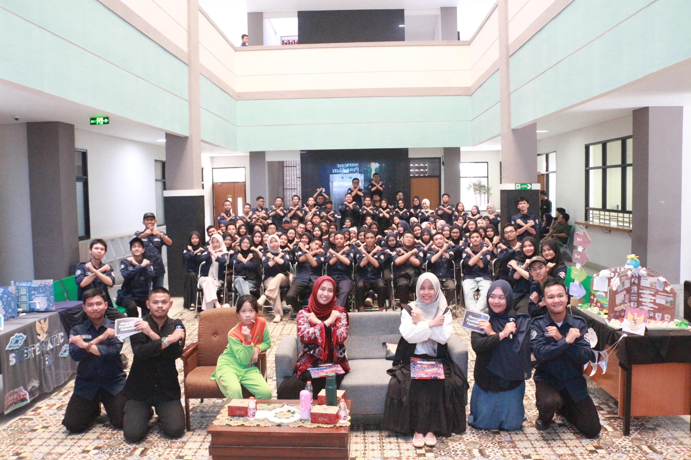
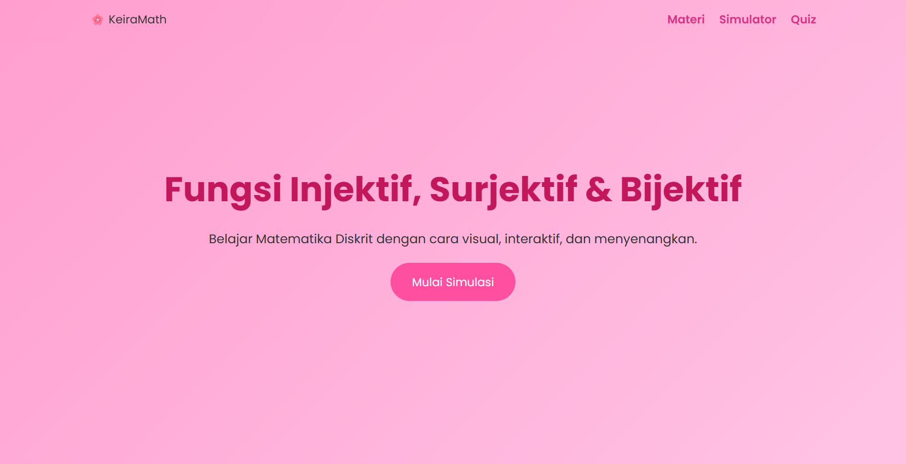
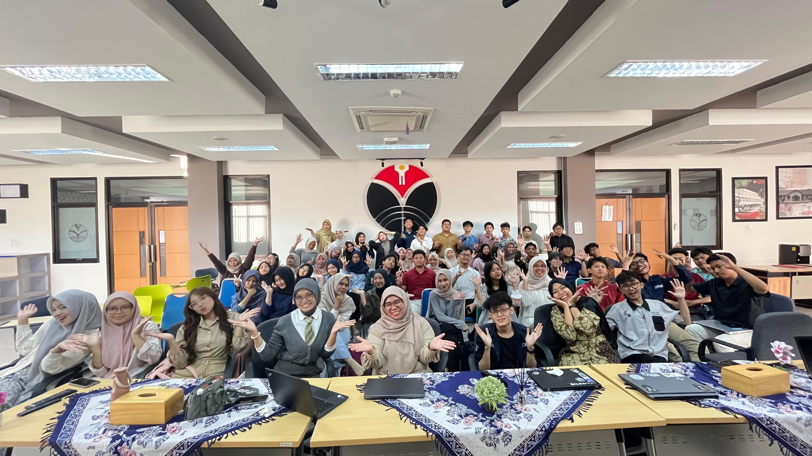

Berikut adalah beberapa project sederhana yang pernah atau sedang saya kerjakan

Media pameran edukatif yang dikembangkan untuk menanamkan serta mengaktualisasikan nilai-nilai luhur Pancasila melalui pendekatan konten kreatif yang relevan dengan aktivitas generasi muda sehari-hari.

Sebuah karya literatur yang mengupas tuntas sinergi antara dunia pendidikan dan transformasi digital, serta bagaimana mengoptimalkan teknologi modern sebagai instrumen pendukung pembelajaran yang efektif.
Repository:https://github.com/keirahadellyaarifin-lang/keira-math

Platform pembelajaran digital interaktif yang dirancang khusus untuk mempermudah pemahaman konsep Matematika Diskrit. Dilengkapi visualisasi pemetaan fungsi (injektif, surjektif, bijektif) serta modul evaluasi berupa kuis interaktif.
Repository:

Inisiatif kreatif dalam industri *game development* yang berfokus pada penyusunan alur permainan interaktif dan edukatif, memadukan elemen teknologi modern untuk menciptakan pengalaman bermain yang imersif.
| Ringkasan Portofolio Project | |||
| No | Nama Project | Detail Project | |
| Jenis | Status | ||
| 1 | ShowCase Pendidikan Pancasila | Prototype | Selesai |
| 2 | Buku Pendidikan dan Teknologi | Buku Fisik | |
| 3 | KeiraMath | Web App | |
| 4 | Kreswara Studio | Game Fiksi | Dalam Pengembangan |